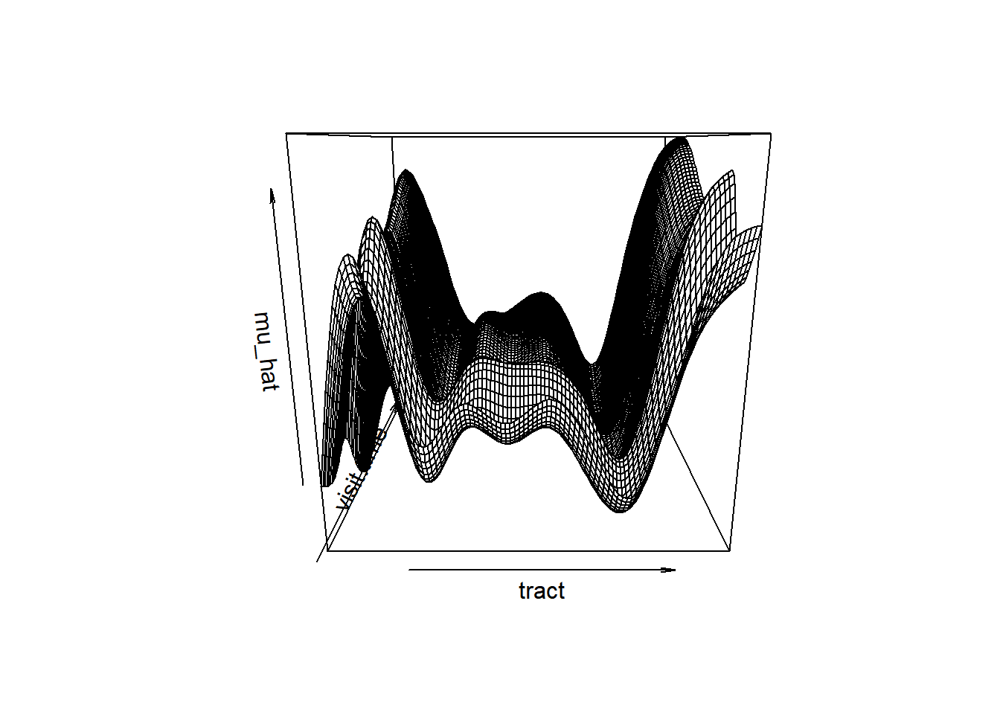
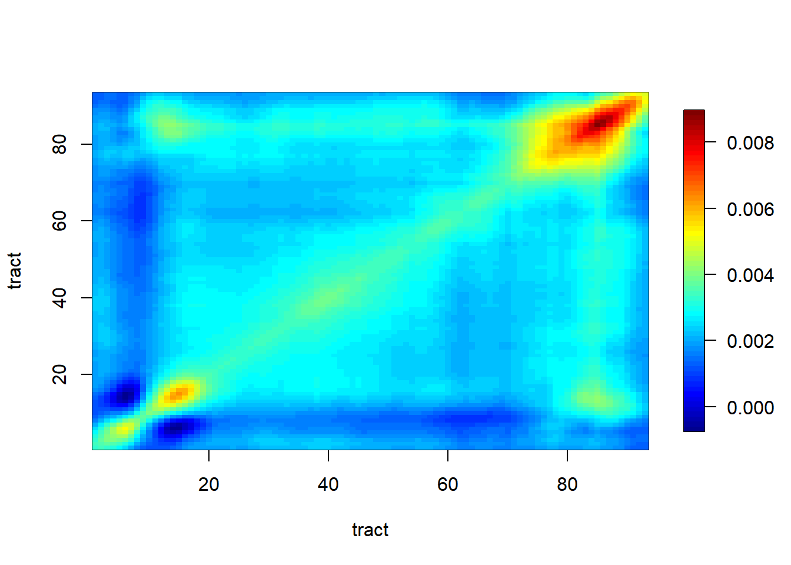
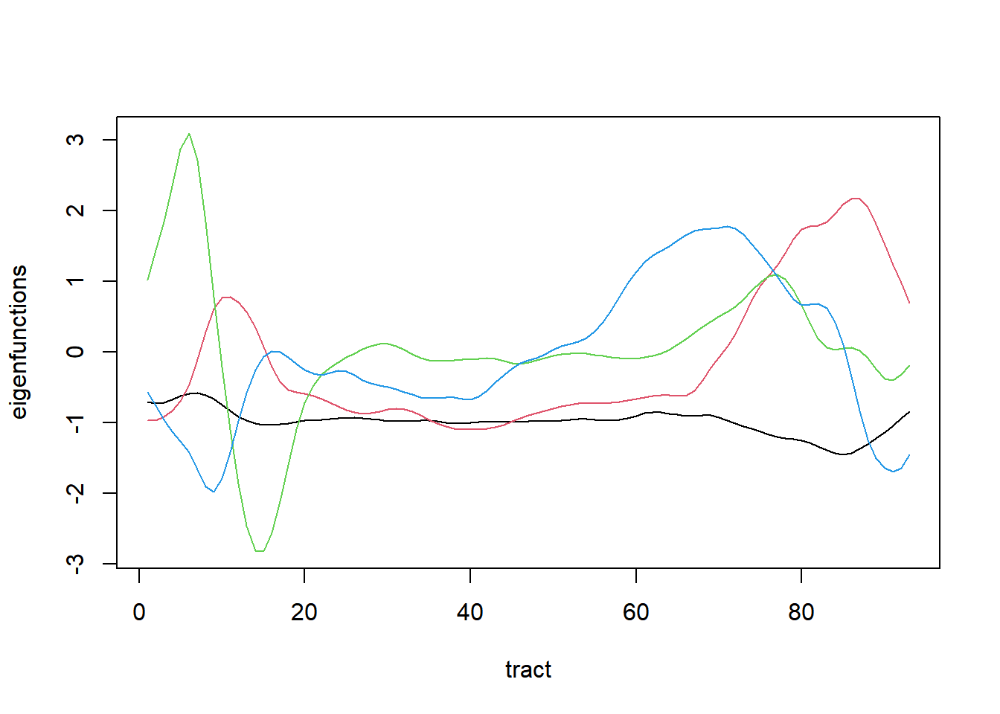
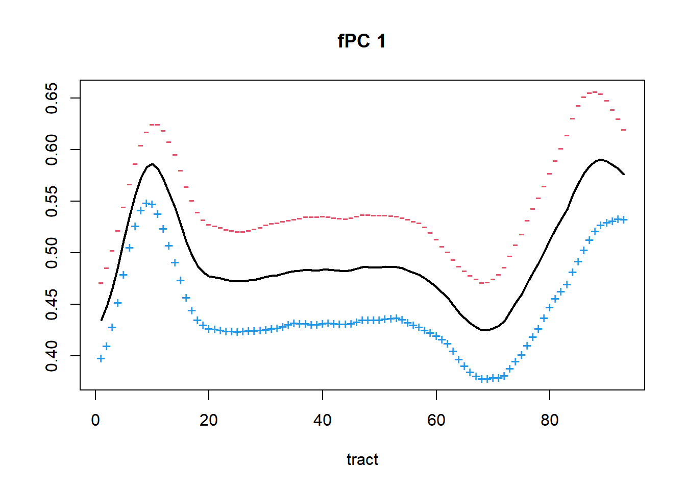
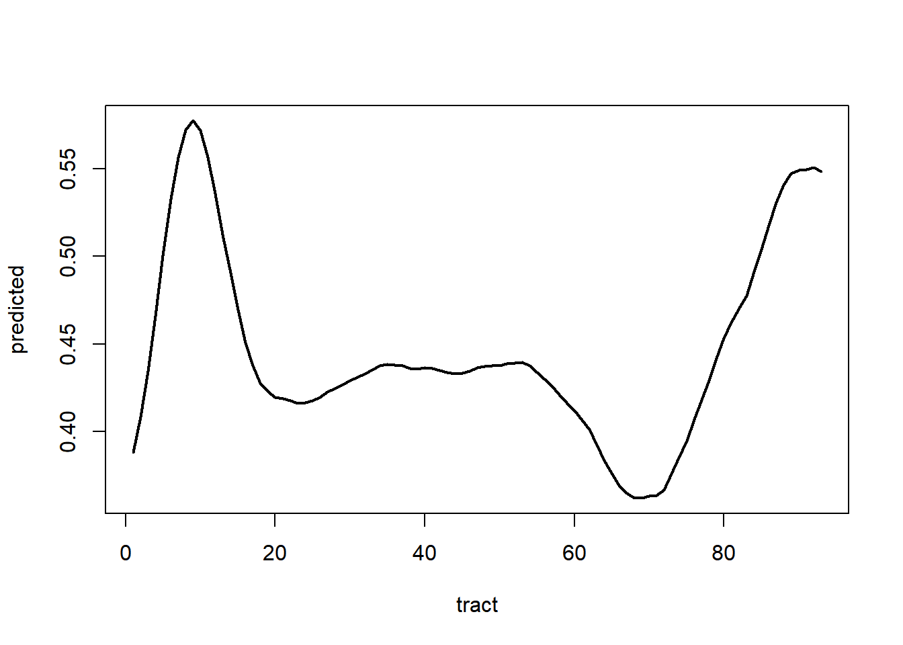

Dia-05
Análise longitudinal de dados funcionais
Visualização usando o pacote refund.shiny
Ilustramos a análise de componentes principais funcionais variáveis no tempo usando dados de DTI (Imagem de Tensor de Difusão). O método foi desenvolvido para um projeto de amostragem funcional densa; portanto, imputamos alguns valores ausentes com estimativas. A variável “visit.time” no conjunto de dados DTI representa o tempo real das visitas em dias; escalamos os tempos de visita de forma que eles estejam entre 0 e 1.
data("DTI")
MS <- subset(DTI, case ==1) # subset data with multiple sclerosis (MS) case
index.na <- which(is.na(MS$cca))
Y <- MS$cca
Y[index.na] <- fpca.sc(Y)$Yhat[index.na]
sum(is.na(Y))[1] 0id <- MS$ID
visit.index <- MS$visit
visit.time <- MS$visit.time/max(MS$visit.time)1 Análise de componentes principais funcionais variáveis no tempo (TFPCA)
Passo 1.1: função média
dim(Y)[1] 340 93length(visit.time)[1] 340Y.vec <- as.vector(t(Y))
tract <- 1:93
s <- rep(tract, nrow(Y))
t <- rep(visit.time, each = length(tract))
fit <- gam(Y.vec ~ te(s,t, k = c(10, 7)))
t1 <- rep(seq(0,1, length.out=81), each = 93)
s1 <- rep(tract, 81)
mu.hat <- matrix(predict(fit, newdata = data.frame(s = s1, t = t1)), 93)
persp(x = tract, y = seq(0,1,length.out=81), z = mu.hat,
xlab="tract", ylab="visit.time", zlab = "mu_hat")
Gráfico interativo
# rgl::persp3d(x = tract, y = seq(0,1,length.out=81), z = mu.hat,
# xlab="tract", ylab="visit.time", zlab = "mu_hat")Passo 1.2: função de covariância marginal
demeaned <- Y - t(matrix(fit$fitted.values, 93))
Sigma <- cov(demeaned)
image.plot(tract, tract, Sigma, xlab="tract", ylab="tract")
m.fit <- fpca.face(demeaned, pve = 0.80)
efn <- m.fit$efunctions*sqrt(93)
eval <- m.fit$evalues/93
matplot(tract, efn, type='l', lty=1,
xlab="tract", ylab="eigenfunctions")
k.pc <- 1
m <- colMeans(Y)
effect <- efn[,k.pc] * sqrt(eval[k.pc])
matplot(tract, cbind(m-effect, m+effect),
col=c(2,4), pch = c("-", "+"),
ylab="", xlab="tract", main=paste("fPC", k.pc))
lines(tract, m, lwd=2)
Passo 1.3: Covariância dos coeficientes variáveis no tempo
Construa um novo conjunto de dados com os coeficientes estimados da base \((\xi_{ik}(t_{ij}))\) e os tempos de visita \((t_{ij})\).
score <- m.fit$scores/sqrt(93)
id <- MS$ID
second.fPCA <- list()
for(k in 1:m.fit$npc){
ydata <- data.frame(.id = MS$ID, .index = visit.time,
.value = score[,k])
second.fPCA[[k]] <- fpca.sc(ydata = ydata, pve = 0.80)
}A entrada ydata é outra forma de fornecer dados funcionais; isso é especialmente útil quando você possui dados longitudinais.
(Atividade em grupo) Plote o segundo resultado do fPCA para diferentes k e discuta.
Passo 1.4: Reconstrução de trajetórias
i <- 1
fixed_visit.time <- 0.5
mu.hat <- predict(fit, newdata = data.frame(s = tract,
t = fixed_visit.time))
score <- c()
for(k in 1:m.fit$npc){
temp <- data.frame(Y = second.fPCA[[k]]$Yhat[i,],
t = sort(unique(visit.time)))
temp.fit <- gam(Y ~ s(t), data = temp)
score <- c(score, predict(temp.fit,
newdata = data.frame(t = fixed_visit.time)))
}
Yhat <- as.vector(mu.hat) +
as.vector(m.fit$mu) + as.vector(t(score)%*%t(efn))
plot(tract, Yhat, type='l', lwd=2,
xlab="tract", ylab="predicted")
(Atividade em grupo) Plote a trajetória prevista da FA para um paciente com EM diferente / um tempo de visita diferente.
2 Função incorporada (‘fpca.lfda’)
A função fpca.lfda no pacote ‘refund’ ajusta o modelo de fPCA variável no tempo.
\[ Y_{i}(s, t_{ij}) = \mu(s, t_{ij}) + \sum_{k} \xi_{ik}(t_{ij}) \phi_{k}(s) + \epsilon_{ij}(s). \]
O código a seguir é utilizado quando os coeficientes variáveis no tempo, \(\{ \xi_{ik}(t_{ij}), t_{ij} \}\), são modelados usando um modelo linear misto (LongiModel.method = ‘lme’).
# lfpca.dti1 <- fpca.lfda(Y = Y, subject.index = id, numTEvalPoints = 81,
# visit.index = visit.index, obsT = visit.time,
# LongiModel.method = 'lme',
# mFPCA.pve = 0.95)
#
# plot_shiny(lfpca.dti1)E o código a seguir é utilizado quando os coeficientes variáveis no tempo, \(\{ \xi_{ik}(t_{ij}), t_{ij} \}, tij\}\), são modelados completamente de forma não paramétrica usando fPCA (LongiModel.method = ‘fpca.sc’).
# lfpca.dti2 <- fpca.lfda(Y = Y, subject.index = id, numTEvalPoints = 81,
# visit.index = visit.index, obsT = visit.time,
# LongiModel.method = 'fpca.sc',
# mFPCA.pve = 0.80, sFPCA.pve = 0.80)
# plot_shiny(lfpca.dti2)Isso retorna duas abas com gráficos interativos:
- Aba 1: Gráficos Exploratórios
- Dados
- Dados por sujeito
- Distribuição dos tempos longitudinais (amostragem longitudinal)
- Aba 2: Gráficos de Estimação
- Superfície média; \(\mu(s,t)\)
- Covariância marginal; \(Σ(s,s')\)
- Eigenfunções marginais; \(\phi_k(s)\)
- Média +/- eigenfunções marginais
- Gráfico Scree
- Covariância da dinâmica longitudinal
- Coeficientes da base; \(ξ_{ik}(t)\)
- Yhat (valores previstos)
(Atividade em grupo) Explore os gráficos interativos.